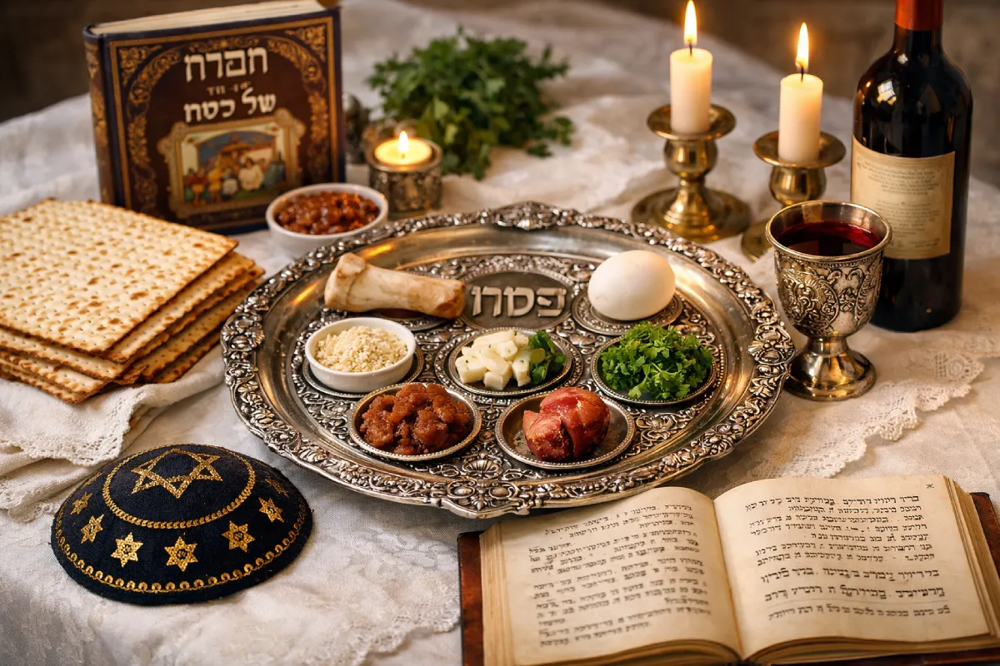
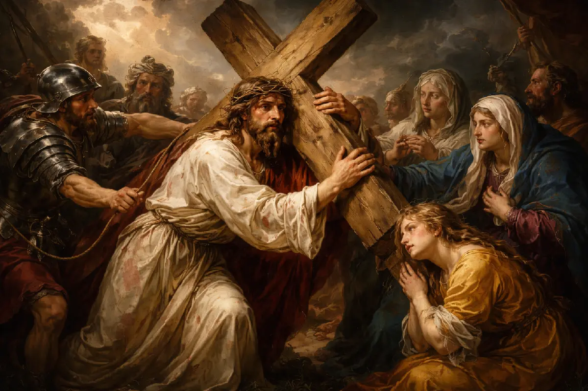

Fotogalerie
✝
Okamžiky z farního života, bohoslužeb a míst, která tvoří naše společenství.
Farní život




Naše kostely


Okamžiky z farního života, bohoslužeb a míst, která tvoří naše společenství.
Farní život


Naše kostely